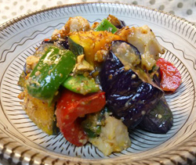

くるみみそ和え
- 調理時間：30 分
- （一人当たり）
- カロリー：207kcal
- たんぱく質：5.4g
- 脂質：10.8g
- 塩分：0.8g

＜２人分＞
- レンコン
- ５０ｇ
- カボチャ
- １００ｇ
- ナス
- １本
- モロッコインゲン
- １本
- パプリカ（赤）
- ３０ｇ
【くるみみそ】
- ・くるみ
- ３０ｇ
- ・味噌
- 大さじ１
- ・しょうゆ
- 小さじ１／４
- ・砂糖
- 小さじ１／２～１

- レンコンは乱切りにして酢水にさらす。カボチャは一口大に切る。ナスは２～３ｃｍ幅の輪切りにする。
モロッコインゲンは２ｃｍ幅に切る。パプリカは乱切りにする。 - 【くるみみそ】を作る。
煎ったクルミをすり鉢にいれて少し粗めにすり、味噌、しょうゆ、砂糖を加え、なめらかになるまですり合わせる。 - ①の野菜はそれぞれ硬めにゆでる（または蒸す）。少々（分量外）の醤油をかけて下味をつける。
- 食べる直前に和える。
くるみみそ和え
中医学でクルミは、肺の機能を高めたり、腎を温める作用があるとされています。ですから乾燥して気管支を病みやすいこの時期にぴったりの食材です。主成分は脂質とたんぱく質ですが、脂質の多くは不飽和脂肪酸で血中コレステロールを下げる働きがあり、動脈硬化を予防したり、美肌作りにもよいとされています。良質の油分がたっぷり含まれるので便秘にも効果があります。しかし、１個当たり大体３５キロカロリーあるので高カロリー食材です。おやつでポリポリ食べ過ぎるとカロリー過剰の心配がありますのでご注意を。今回のように料理で使用すれば食べ過ぎることもありません。旬のクルミと秋野菜を存分に楽しみましょう。